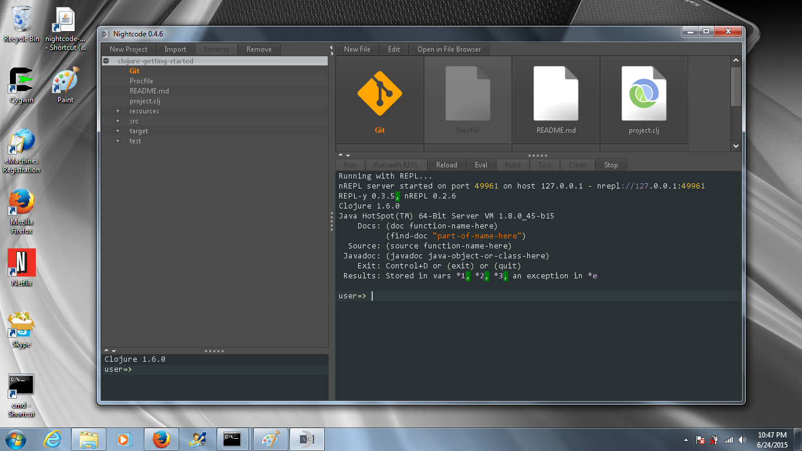

Install Nightcode¶
Go to the...
- prev section Getting Started with Heroku
- new Setup instructions
- next section Try Clojure Koans in Nightcode
Download Nightcode¶
Nightcode is an integrated development environment (IDE) for creating Clojure programs. You can download it from:
https://sekao.net/nightcode/
Setup Nightcode on Windows¶
In your brower can you can right click on the nightcode jar file and select “open containing folder”

Once you are viewing the Downloads folder in Explorer, right click on the jar file and select Send to | Desktop (create shortcut)

On Windows you can double click on jar files to launch them.. So double click on the nightcode jar:

Finally you can open the clojure-getting-started project we worked on in Nightcode:

Setup Nightcode on Mac¶
Change directories to your ~/bin directory and download Nightcode,
then download the nightcode launcher from our website.
clojurista@mylaptop $ cd ~/bin
clojurista@mylaptop $ curl -LO https://github.com/oakes/Nightcode/releases/download/0.4.7/nightcode-0.4.7-standalone.jar
clojurista@mylaptop $ curl -LO https://raw.githubusercontent.com/clojurebridge-minneapolis/installfest/experimental/docs/nightcode
clojurista@mylaptop $ chmod +x nightcode
clojurista@mylaptop $ cd ..
clojurista@mylaptop $ nightcode
Since the ~/bin directory is already in your PATH you can
start nightcode from anywhere with nightcode.
Now you can open the clojure-getting-started repo in Nightcode (see above).
Setup Nightcode on Linux¶
The setup for Linux is the same as for Mac!
You might encounter a problem where Nightcode seems to crash after startup... If that happens you probably need to be running a compositing Window Manager. You can add this feature to your current environment by adding this package:
# apt-get install xcompmgr
And starting the compositing manager before Nightcode:
clojurista@mylaptop $ xcompmgr &
clojurista@mylaptop $ nightcode
Now you can open the clojure-getting-started repo in Nightcode (see above).